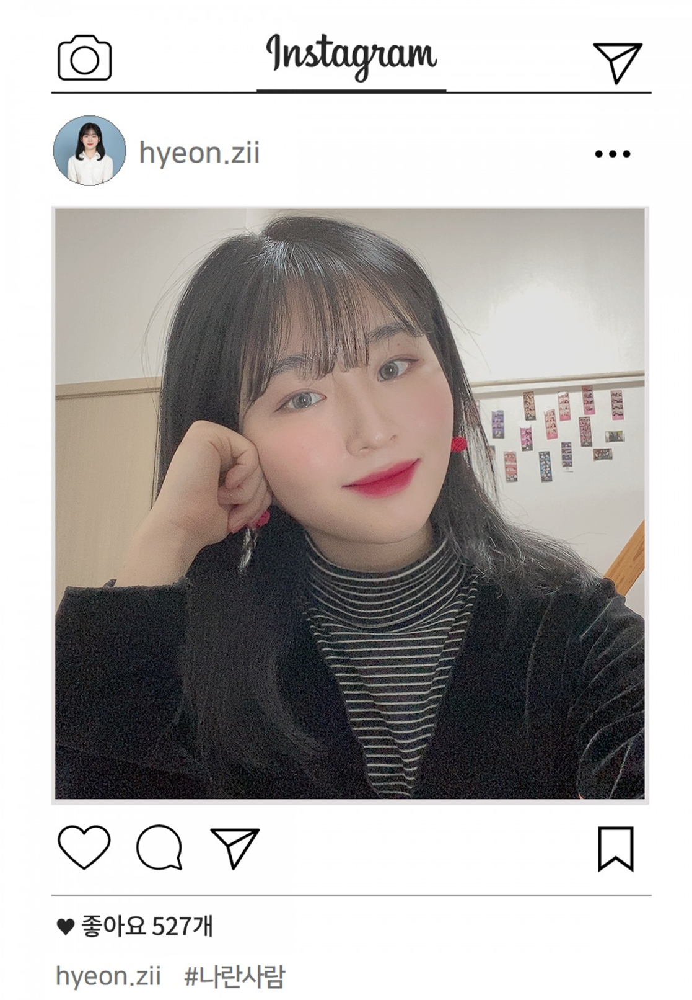
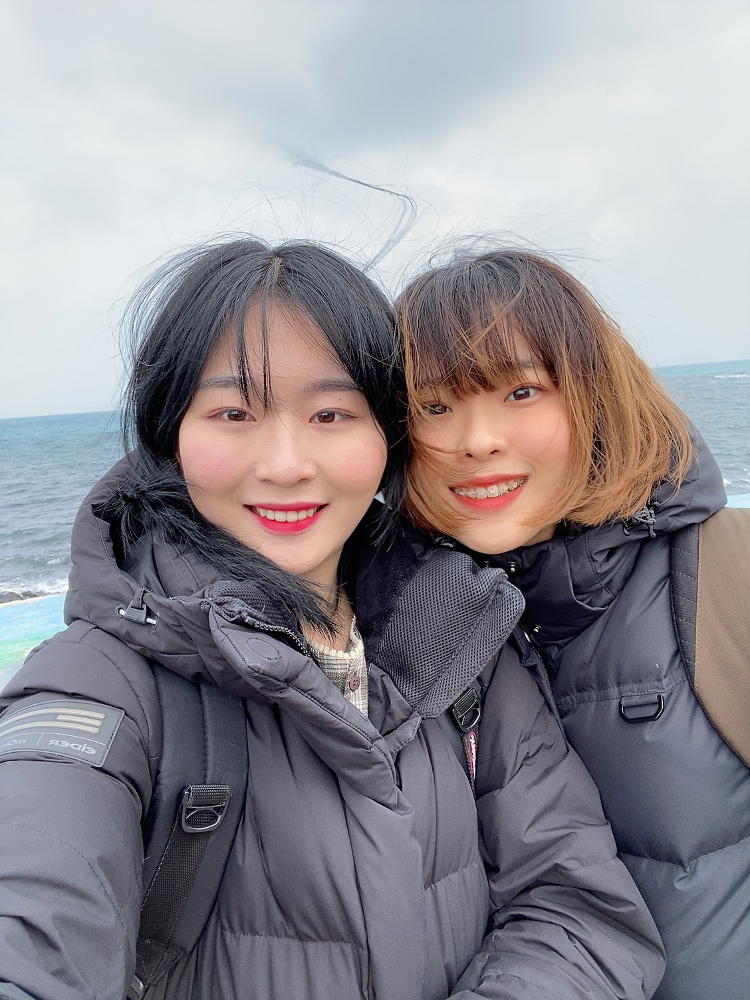
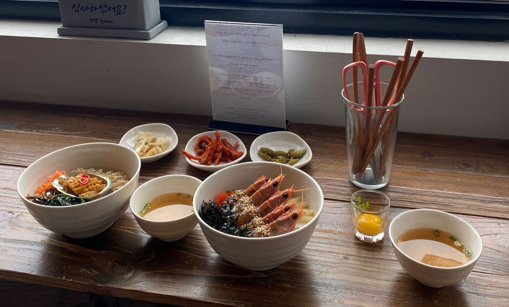
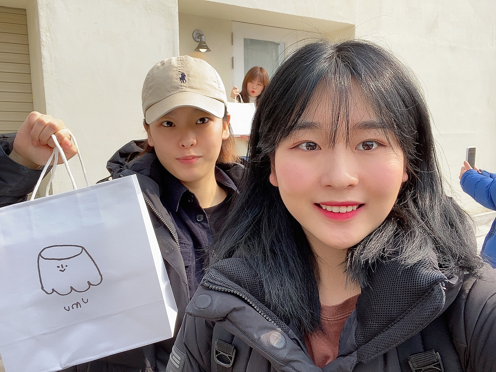
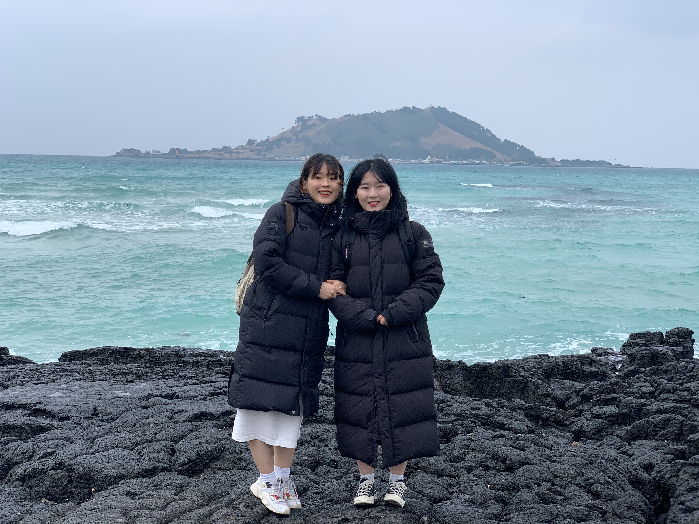

박현지 (2000.12.15)
건국대학교 소프트웨어학과 19학번
건국대학교 공과대학 학생회 참엔 신입기획국 국원
Tel. 010-2321-7335
E-Mail. iamphj3@naver.com
Add. 광진구 아차산로 312
20문 20답
1. 이름 : 박현지
────────────────
2. 생년월일 : 2000.12.15
────────────────
3. 존경하는 사람 : 부모님
────────────────
4. 좋아하는 음식 : 떡볶이
────────────────
5. 싫어하는 음식 : 버섯, 와사비
────────────────
6. 좋아하는 음악 장르 : 힙합, 인디
────────────────
7. 기분전환 하는 방법 : 한강에 간다
────────────────
8. 해본 아르바이트 : 영화관, 카페
────────────────
9. 기상 시간 : 9~10시
────────────────
10. 가본 나라 : 중국, 홍콩, 마카오, 대만
────────────────
11. 10년 뒤에 되고싶은 모습 :
외국에서 프로그래머로 일하고 싶다
12. 대학생활 중 해보고 싶은 것 :
교환학생, 연합동아리
────────────────
13. 이상형 :
배울 점이 많고 패션 센스가 좋은 사람
────────────────
14. 가족관계 : 엄마, 아빠, 남동생
────────────────
15. 용돈을 주로 어디에 쓰는지 :
식비(밥, 카페, 술 등등)
────────────────
16. 로또에 당첨된다면 :
서울에 좋은 집을 사서 부모님과 살고 싶다
────────────────
17. 현재의 고민 :
코딩을 앞으로 더 잘할 수 있을지
────────────────
18. 콤플렉스 : 얼굴형(광대)
────────────────
19. 초능력이 생긴다면 :
다른 사람의 속마음을 알고 싶다
────────────────
20. 나에게 하고싶은 말 :
하고싶은 것은 마음껏 하면서 살자!!
건 대 신 문
2020.04.24
글쓴이 박현지
─────────────────────
왕복 3만원, 숙박비 만 칠천원으로 제주도를?!

여행 소개와 주제 선정 이유
저의 소중한 기억은 2020년 2월 9일에
친구와 둘이서 1박 2일로 간 제주도 여행입니다.
코로나 사태가 막 시작되려고 하고 있을 당시
방학 때 집에만 있는 것이 너무 심심해서 친구랑
"야 내일 제주도 갈래?" 하면서 하루 전에 항공권,
숙박 예매를 해서 떠난 여행이었습니다.
아무 계획도, 근본도 없이 간 여행이고 숙소에서
잠 잔 시간이 논 시간보다 더 많았었지만 그만큼
더 새롭고 의미 있었기에 아직까지도 기억에
남아서 주제로 선정하게 되었습니다.
주로 제주도 서쪽(협재,애월 등)을 여했했고,
협재해수욕장, 새별오름, 예쁜 카페 등등에
택시와 뚜벅이로 돌아다녔습니다.
밑에서 더 자세히 소개해드리겠습니다!
먹은 밥

제주 협재 "안녕 협재씨"
딱새우장비빔밥
15000원
★★★★☆
비행기에서 내리자 마자 처음 먹었던 음식입니다.
직원분들도 너무 친절하셨고, 협재해수욕장을 바라보면서
음식을 먹을 수 있어서 분위기가 너무 좋았습니다.
화려한 비주얼과 신선한 맛이 정말 인상깊었고 정말
제주도에 왔다는 느낌이 물씬 풍기는 식당이었습니다.
해산물을 좋아하는 사람들에게 추천하고 싶습니다!
먹은 디저트

제주 한림 "우무푸딩"
커스터드푸딩
6300원
★★★★★
제가 제주도에서 먹었던 것들 중
정말 최고였다고 말할 수 있습니다.
우뭇가사리로 만든 수제푸딩인데, 입 안에
넣는 순간 녹아버리는 맛이었습니다.
제주도의 핫플레이스라고 불리는 만큼
우무 캐릭터도 너무 귀여웠습니다.
10분 내에 먹어야 해서 사오지를 못한 게
무척 아쉬웠지만 다음에 제주도에 가면 꼭
다시 먹으러 가고 싶은 곳입니다.
마무리하면서

저는 이때까지 가족 여행만 가봤었고 주로 패키지 여행을 갔었기
때문에
친구와 단 둘이 계획도 없이 여행을 떠난 것은 처음이었습니다.
처음에는 걱정도 했었지만 막상 가보니 압박감 없이 자유롭게
다닐 수 있는 것이
너무 좋았고 답답한 서울에서 벗어나 힐링할 수 있었던 좋은 여행이었습니다.
아쉬웠던 점은 버스 배차간격이 너무 길어서 그냥 걸어다니거나 택시를 타야
했다는 것이었습니다. 다음에는 차 렌트를 해서 직접 운전을 하며 더 많은 곳을
다녀봐야 겠다고 생각했습니다.